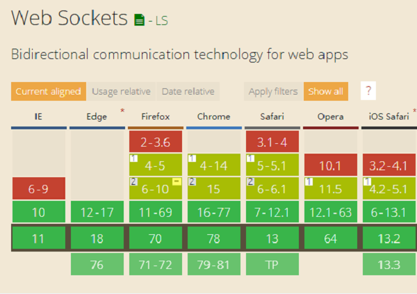
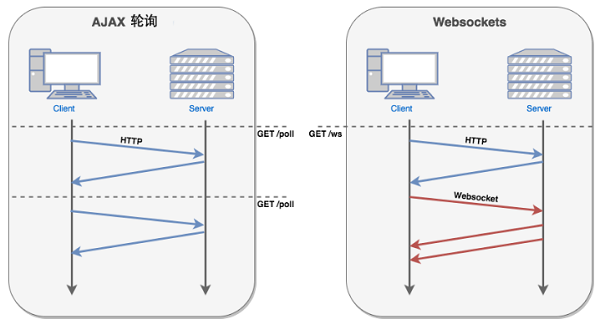
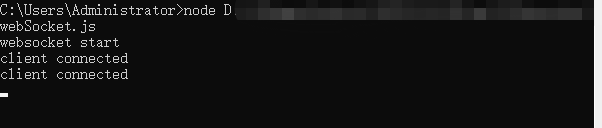
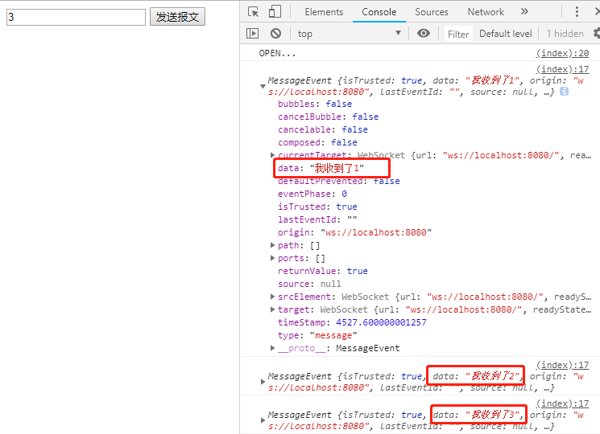

很多网站为了实现推送技术，所用的技术都是Ajax轮询。轮询是在特定的的时间间隔由浏览器对服务器发出HTTP请求，然后由服务器返回最新的数据给客户端的浏览器。这种传统的模式带来很明显的缺点，即浏览器需要不断的向服务器发出请求，然而HTTP请求可能包含较长的头部，其中真正有效的数据可能只是很小的一部分，显然这样会浪费很多的带宽等资源。HTML5新增的一些新协议WebSocket,可以提供在单个TCP连接上提供全双工，双向通信，能够节省服务器资源和带宽，并且能够实时进行通信。
传统的http也是一种协议，WebSocket是一种协议，使用http服务器无法实现WebSocket，
2.1.浏览器支持情况
基本主流浏览器都支持

2.2.优点
相对于http有如下好处：
对比轮训机制

我们了解WebSocket是什么，有哪些优点后，怎么使用呢？
3.1.WebSocket创建
WebSocket使用了自定义协议，url模式与http略有不同，未加密的连接是ws://，加密的连接是wss://，WebSocket实例使用new WebSocket()方法来创建，
var ws = new WebSocket(url, [protocol] );第一个参数 url, 指定连接的 URL。第二个参数 protocol 是可选的，指定了可接受的子协议。
3.2.WebSocket属性
当创建ws对象后，readyState为ws实例状态，共4种状态
0 表示连接尚未建立。
1 表示连接已建立，可以进行通信。
2 表示连接正在进行关闭。
3 表示连接已经关闭或者连接不能打开。
Tips：在发送报文之前要判断状态，断开也应该有重连机制。
3.3.WebSocket事件
在创建ws实例对象后，会拥有以下几个事件，根据不同状态可在事件回调写方法。
ws.onopen 连接建立时触发
ws.onmessage 客户端接收服务端数据时触发
ws.onerror 通信发生错误时触发
ws.onclose 连接关闭时触发
ws.onmessage = (res) => {
console.log(res.data);
};
ws.onopen = () => {
console.log('OPEN...');
};
ws.onclose=()=>{
console.log('CLOSE...');
}3.4.WebSocket方法
ws.send() 使用连接发送数据(只能发送纯文本数据)
ws.close() 关闭连接
了解WebSocket的一些API之后，趁热打铁，做一个小案例跑一下。
4.1.Node服务器端
WebSocket协议与Node一起用非常好，原因有以下两点：
1.WebSocket客户端基于事件编程与Node中自定义事件差不多。
2.WebSocket实现客户端与服务器端长连接，Node基本事件驱动的方式十分适合高并发连接
创建一个webSocket.js如下：
const WebSocketServer = require('ws').Server;
const wss = new WebSocketServer({ port: 8080 });
wss.on('connection', function (ws) {
console.log('client connected');
ws.on('message', function (message) {
ws.send('我收到了' + message);
});
});打开windows命令窗口运行

4.2.HTML客户端
新建一个index.html页面
<!DOCTYPE html>
<html lang="en">
<head>
<meta charset="UTF-8">
<title>webSocket小Demo</title>
</head>
<body>
<div class="container">
<div>
<input type="text" id="msg">
<button onclick="sendMsg()">发送报文</button>
</div>
</div>
<script>
const ws = new WebSocket('ws://localhost:8080');
ws.onmessage = (res) => {
console.log(res);
};
ws.onopen = () => {
console.log('OPEN...');
};
ws.onclose = () => {
console.log('CLOSE...');
}
function sendMsg() {
let msg = document.getElementById('msg').value;
ws.send(msg);
}
</script>
</body>打开浏览器依次输入字符1,2,3，每次输入完点击发送报体，可见在ws.onmessage事件中res.data中返回来我们发的报文

以上只是简单的介绍了下WebSocket的API与简单用法，在处理高并发，长连接这些需求上，例如聊天室，可能WebSocket的http请求更加合适高效。
但在使用WebSocket过程中发现容易断开连接等问题，所以在每次发送报文前要判断是否断开，当多次发送报文时，由于服务器端返回数据量不同，返回客户端前后顺序也不同，所以需要在客户端收到上一个报文返回数据后再发送下一个报文，为了避免回调嵌套过多，通过Promise ，async ,await等同步方式解决。关于WebSocket就写这么多，如有不足，欢迎多多指正！
参考资料：
《JavaScript高级教程》
《深入检出NodeJs》
《菜鸟教程》